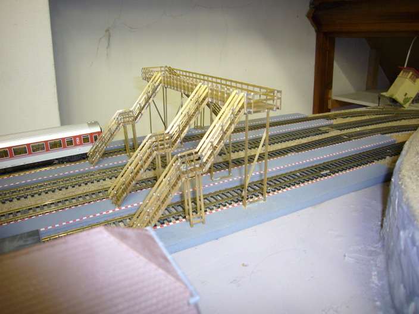
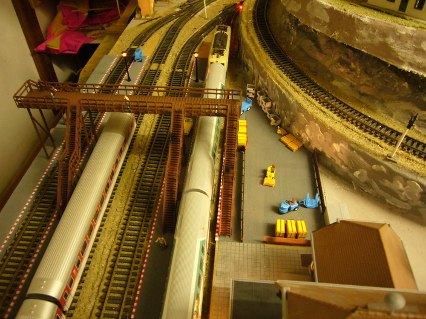
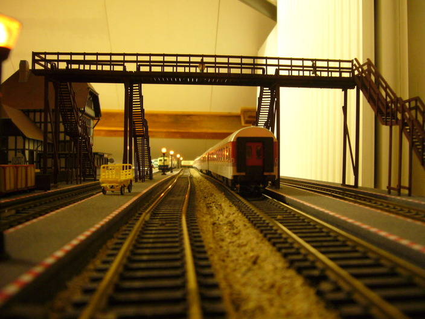
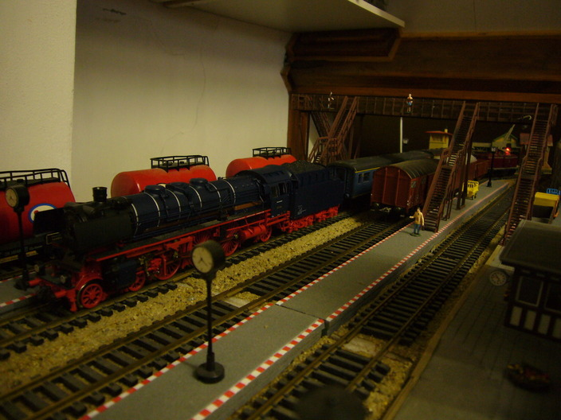

I got a old station from a collage of mine. Since it is such a nice old building I decided to build a trackcrossing bridge in the same kind of time era. I constucted this crossing from brass. Since I builded my bridge from brass I continued using it. It is such a nice construction material. I first made some drawing in google sketchup in order to figureout how to make it.
.
The finished crossing without paint:

Following are some pictures of the final crossing with some trains to decorate it:


